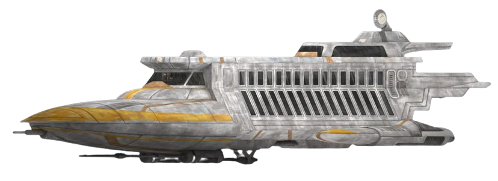
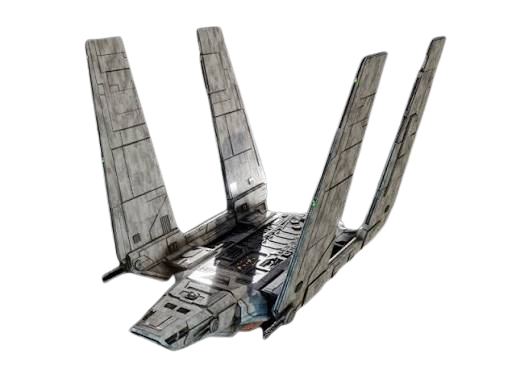

Gunship ⯆ Gunship ⯅
A rugged, dual-engine gunship built for fast deployment and rough landings. Originally repurposed from military service, it now handles our high-priority and 'we need to leave immediately' routes.
A rugged, dual-engine gunship built for fast deployment and rough landings. Originally repurposed from military service, it now handles our high-priority and 'we need to leave immediately' routes.

A sleek, gold-trimmed cruiser built for comfort rather than combat. Spacious cabins, panoramic viewports, and just enough legroom to forget you're hurtling through hyperspace.

A distinctive tri-wing shuttle favored by officials who like to make an entrance. Folding wings, tight security clearance required, surprisingly smooth ride once it's off the ground.

A boxy, no-nonsense transport built for cargo and personnel alike. Not much to look at, but reliable enough that even the pickiest passengers stop complaining after liftoff.